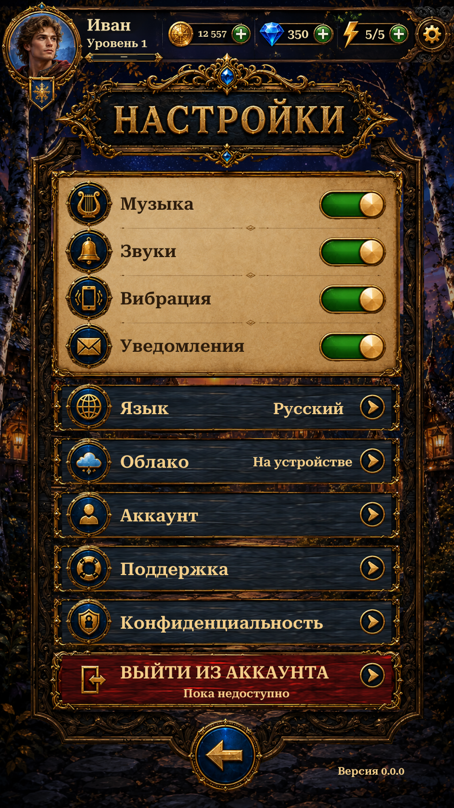

Settings now uses the approved shared Home header, safe-edge navigation, matching press feedback and clearer labels around the original extracted controls.
Music, sound, vibration and notification preferences use the existing saved settings. Language selection and pause return remain functional; unavailable account/cloud services are labelled honestly. Unity views are actual Play Mode captures with isolated saves and simulated phone dimensions/safe areas; reference and previous-version views are labelled separately.

Changes and validation · Remaining reference differences · Verification results